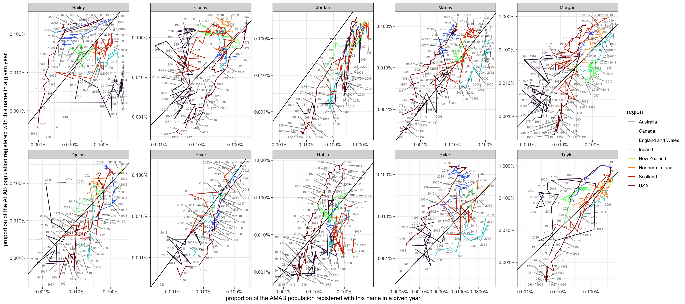
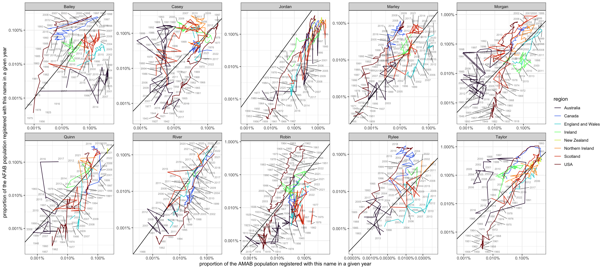

── Attaching core tidyverse packages ──────────────────────── tidyverse 2.0.0 ──
✔ dplyr 1.1.3 ✔ purrr 1.0.2
✔ forcats 1.0.0 ✔ stringr 1.5.0
✔ ggplot2 3.4.4 ✔ tibble 3.2.1
✔ lubridate 1.9.3 ✔ tidyr 1.3.0
── Conflicts ────────────────────────────────────────── tidyverse_conflicts() ──
✖ dplyr::filter() masks stats::filter()
✖ dplyr::lag() masks stats::lag()
ℹ Use the conflicted package (<http://conflicted.r-lib.org/>) to force all conflicts to become errors
library(broom)library(flextable)
Attaching package: 'flextable'
The following object is masked from 'package:purrr':
compose
options(scipen =999)
Purpose
While there are many projects around collating and exploring baby name data, I have yet to find one that looks at frequency (popularity) over time and country for all the countries I’m interested in.
There are some good and fairly comprehensive ones out there, but many of them don’t document their gathering and wrangling processes or are designed for different purposes. Here is mine.
When designing linguistic stimuli, sometimes we use gender stereotypes to probe comprehension processes. Sometimes we just need a bunch of names in order to vary the content of sentences without distracting from other aspects. Sometimes we need gender ambiguous names. Sometimes we need gender balanced names. Sometimes we need names that evoke certain beliefs or stereotypes. Regardless, the social properties of names change over time as new stereotypes and distributions come to the forefront and are incorporated into individuals understanding of the world.
My project aims to:
Collect information about the names (primarily) English-speaking people (in primarily English-speaking countries) are exposed to
Identify how exposure in peer groups and in parent/grandparent/child peer groups influences perceptions and stereotypes about names
Identify how views of gender influence perceptions and stereotypes about names
Investigate how perceptions and stereotypes about names influence related grammatical processes (e.g. coreference)
Investigate how perceptions and stereotypes about names influence unrelated grammatical processes (e.g. filled gap effects)
Provide a dataset and tools for building informed linguistics example sentences and stimuli
gender-fair name selection informed by participant age range
finding and selecting racially/ethnically representative names
generating age-appropriate lists of gender-balanced (unisex) names
identifying names perceived to be (more) ‘nonbinary’ or ‘binary’
identifying names perceived to be (more) ‘young’ or ‘old’ (relative to participants’ age)
identifying names marked for other stereotypes (e.g. race, country of origin, socio-economic class)
gathering this information by region and by age, as these stereotypes can vary internationally and generationally
Gathering raw data
USA
Hadley Wickham’s babynames package only goes to 2017, but that is an alternative for smaller scope projects
National Records of Scotland: Full list 1974-2022 here
read_csv("data/Scotland/babies-first-names-all-names-all-years.csv",show_col_types =FALSE) |>select(-position) |># rank is not calculated the same way as for USA, position is a char stringrename(year = yr, asab = sex, name = FirstForename) |>mutate(asab =case_when(asab =="B"~"M", asab =="G"~"F",TRUE~"X"),region ="Scotland",name =str_to_title(name)) |>group_by(year,asab) |>mutate(proportion = number/sum(number, na.rm =TRUE)) |>ungroup() -> names_Scotland
# Thanks to Hadas Kotek for parsing the JSON (3 November 2022)
import pandas as pd
import json
with open('victoria_babies_json_query_return.txt') as f:
json_data = json.load(f)
pd.DataFrame(json_data['popular_baby_names']).to_csv('popular_baby_names.csv', index=False)
Australian Capital Territory
# ACT# no data, too small (only releases brief statement)
New South Wales
# new south walesnames_nsw <-read_csv("data/Australia/NSW/popular_baby_names_1952_to_2022-v2.csv",show_col_types =FALSE) |>rename(rank = Rank,name = Name,number = Number,asab = Gender,year = Year) |>mutate(region ="New South Wales",name =str_to_title(name),asab =case_when(asab =="Male"~"M", asab =="Female"~"F",TRUE~"X"))
These are likely errors in data entry but they do not seem to be recoverable as this is the data as provided. Since ?LIAM only occurs once, I believe it is safe to keep it in as noise, but since (NOT occurs 8 times in one year across both ASAB categories, I believe it should be removed. A brief exploration suggests there is not another word or words in 1968 in South Australia that have been erroneously included (i.e. whatever text followed ‘NOT’), but I am not 100% certain.
# south australiaread_csv(file =list.files(path ="data/Australia/SouthAustralia/Baby Names 1944-2013",pattern =".csv",full.names =TRUE),col_names =TRUE,id ="file",show_col_types =FALSE) |>mutate(file =str_remove(file, "data/Australia/SouthAustralia/Baby Names 1944-2013/"),file =str_remove(file, "_top.csv")) |>rbind(# had to manually rename "Number" to "Amount" for 2016 filesread_csv(file =list.files(path ="data/Australia/SouthAustralia",pattern =".csv",full.names =TRUE),col_names =TRUE,id ="file",show_col_types =FALSE) |>mutate(file =str_remove(file, "data/Australia/SouthAustralia/"),file =str_remove(file, ".csv"),file =str_remove(file, "top"))) |>rename(name ="Given Name",number ="Amount") |># several files were only top 100 names, not all names, so this throws a warning about file nameseparate(file, into =c("asab","year"), sep ="_") |>group_by(year, asab) |>mutate(name =str_to_title(name),rank =rank(-number, ties.method ="first") |>as.integer(),asab =case_when(asab =="female"~"F", asab =="male"~"M",TRUE~"X"),region ="South Australia",year =str_sub(year, -4, -1) |>as.numeric()) |>select(-Position) |>filter(name !="TOTAL", # 2016 included "TOTAL" as if it were a name name !="(Not") |># REMOVE HIGHER FREQUENCY BAD DATAungroup() -> names_soz
# western australia (hand-compiled from website)#WA_babynames_1930_2022 <- read_csv("data/Australia/WesternAustralia/WA_babynames_1930-2022.csv",show_col_types =FALSE) |>mutate(region ="Western Australia",name =str_to_title(name)) -> names_woz
Australia Combined
# combine australian datanames_nsw |>rbind(names_nt) |>rbind(names_queensland) |>rbind(names_soz) |>rbind(names_tasmania) |>rbind(names_victoria) |>rbind(names_woz) |>#-> names_Australiagroup_by(name, asab, year) |>summarise(number =sum(number),.groups ="drop") |># join with detailed births informationleft_join(read_csv("data/Australia/ABS_BIRTHS_SUMMARY_1.0.0_4+5+1..A.csv",show_col_types =FALSE) |># messy data, needs cleaningrename(measure =`MEASURE: Measure`,region2 =`REGION: Region`,year =`TIME_PERIOD: Time Period`,population = OBS_VALUE) |>select(measure, region2, year, population) |>filter(region2 =="AUS: Australia", measure !="1: Births") |>pivot_wider(names_from = measure,values_from = population),by =join_by("year")) |>mutate(proportion =case_when(asab =="M"~ number/`4: Male births`, asab =="F"~ number/`5: Female births`),region ="Australia") |>group_by(year, asab) |>mutate(rank =rank(-number, ties.method ="first")) |>select(year, name, number, rank, asab, region, proportion) |>ungroup() |># join with older historical data (missing ASAB; solution *estimate* by multiplying annual births by .5)left_join(read_csv("data/Australia/Births registered – 1934 to 2022(a).csv", skip =1,show_col_types =FALSE) |>rename(year = Year, population =`Births registered`),by =join_by("year")) |>mutate(proportion =case_when(is.na(proportion) ~ number/(population*.5), # no births by ASAB data, going by .5 of annual birthsTRUE~ proportion)) |>select(-population) -> names_Australia
Eventually, I would like to add India, China, Japan, Germany, Mexico, and perhaps other places that have large English-speaking populations or large immigrant communities in English-speaking countries. However, this requires resources beyond what I currently have.
Briefly, here are some tests of the dataset to demonstrate its utility.
Unisex or gender-balanced names
The names in unisex_names are a complete list of names that occur at least once in both AMAB and AFAB entries. This does not account for data entry errors or other noise in the datasets.
# create a list of AFAB namesnames_combined |>filter(asab =="F", region =="USA"& number >50| region !="USA"& number >0) -> afab_names# create a list of AMAB namesnames_combined |>filter(asab =="M", region =="USA"& number >50| region !="USA"& number >0) -> amab_names# find intersection of AFAB and AMAB names, regardless of frequencyintersect(afab_names |>pull(name), amab_names |>pull(name)) -> unisex_names
Of the unisex_names, which ones occur in at least 0.05% of the population? This helps control for wildly different population sizes of each country, but also helps weed out noise from data entry errors.
However, I believe the large population of the USA and some possible larger-scale data entry errors could be boosting names like “Mary” and “Samantha” into this list. It is worth exploring in the future.
names_combined |>## CHECK FOR DUPLICATES BEFORE PIVOTING# group_by(name,asab,region,year) |> # summarise(n = n(),# .groups = "drop") |> # filter(n != 1)## COMBINE NAMES IF DATA IS WELL STRUCTUREDpivot_wider(names_from ="asab", values_from =c(number,proportion,rank)) |># view() # ,values_fn = list(ppg = length)filter(name %in% unisex_names, proportion_M >0.0005, proportion_F >0.0005,!is.na(proportion_M),!is.na(proportion_F)) |>pull(name) |>unique()
names_combined |>filter(name %in%c(pull(.data = international_unisex_names, var =`7`),pull(.data = international_unisex_names, var =`8`))) |>pivot_wider(names_from ="asab", values_from =c(number,proportion,rank)) |>ggplot(aes(x = proportion_M, y = proportion_F,color = region,label = region)) +geom_abline(slope =1, intercept =0) +geom_path(aes(group = region)) + ggrepel::geom_text_repel(aes(label = year), size =2, color ="black", alpha = .5,max.overlaps =20,) +xlab("proportion of the AMAB population registered with this name in a given year") +ylab("proportion of the AFAB population registered with this name in a given year") +scale_x_log10(labels = scales::percent_format()) +scale_y_log10(labels = scales::percent_format()) +#scale_color_manual(values = c("red","orange","gold","green3","cyan2","blue","blueviolet","violet")) +scale_color_viridis_d(option ="turbo") +facet_wrap(~name, scales ="free", ncol =5) +NULL

names_combined |>filter(name %in%c(pull(.data = international_unisex_names, var =`7`),pull(.data = international_unisex_names, var =`8`))) |>pivot_wider(names_from ="asab", values_from =c(number,proportion,rank)) |>ggplot(aes(x = number_M, y = number_F,color = region,label = region)) +geom_abline(slope =1, intercept =0) +geom_path(aes(group = region)) + ggrepel::geom_text_repel(aes(label = year), size =2, color ="black", alpha = .5,max.overlaps =20,) +xlab("proportion of the AMAB population registered with this name in a given year") +ylab("proportion of the AFAB population registered with this name in a given year") +scale_x_log10() +scale_y_log10() +#scale_color_manual(values = c("red","orange","gold","green3","cyan2","blue","blueviolet","violet")) +scale_color_viridis_d(option ="turbo") +facet_wrap(~name, ncol =5) +#, scales = "free"NULL

names_combined |>pivot_wider(names_from ="asab", values_from =c(number,proportion,rank)) |>filter(name %in% unisex_names,!is.na(proportion_M),!is.na(proportion_F), proportion_M >0.0005, proportion_F >0.0005, name !="Mary") |>arrange(region,name,year) |>filter(name %in% top.names.combined) |>group_by(region, name) |>mutate(n =n()) |>ungroup() |>filter(n >1) |>ggplot(aes(x = proportion_M, y = proportion_F,color = region,label = region)) +geom_abline(slope =1, intercept =0) +geom_path(aes(group = region)) + ggrepel::geom_text_repel(aes(label = year), size =2, color ="black", alpha = .5,max.overlaps =20,) +facet_wrap(~name, scales ="free") +xlab("proportion of the AMAB population registered with this name in a given year") +ylab("proportion of the AFAB population registered with this name in a given year") +scale_x_continuous(labels = scales::percent_format()) +scale_y_continuous(labels = scales::percent_format()) +scale_color_manual(values =c("red","orange","gold","green3","cyan2","blue","blueviolet","violet")) +NULL